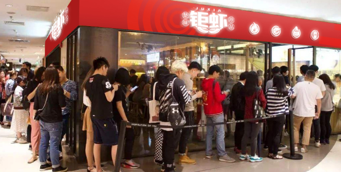

新闻标题
时间：2020-08-14
访客：99+

纪念维拓建院40周年系列活动之摄影比赛，在公司工会的支持下，在摄影协会的精心组织下，历经三个月的时间，最终在颁奖仪式上圆满落幕。近四百幅作品，充分体现了维拓的发展历史，维拓人的生活面貌，更体现了维拓人团结奋斗的精神。纪念维拓建院40周年系列活动之摄影比赛，在公司工会的支持下，在摄影协会的精心组织下，历经三个月的时间，最终在颁奖仪式上圆满落幕。近四百幅作品，充分体现了维拓的发展历史，维拓人的生活面貌，更体现了维拓人团结奋斗的精神。纪念维拓建院40周年系列活动之摄影比赛，在公司工会的支持下，在摄影协会的精心组织下，历经三个月的时间，最终在颁奖仪式上圆满落幕。近四百幅作品，充分体现了维拓的发展历史，维拓人的生活面貌，更体现了维拓人团结奋斗的精神。